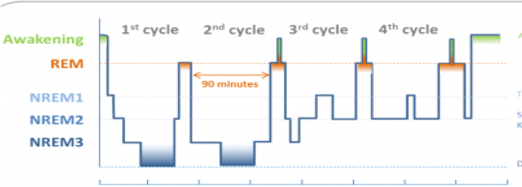

睡眠是人类与生俱来的生理现象，占据了生命的三分之一的时间，是重要的生理功能，可以恢复精力、调节情绪，是人适应环境后规律的作息。
正常睡眠分为4个阶段：非快动眼睡眠(NREM)，包括1期、2期、3期睡眠；快动眼睡眠期（REM）。睡眠是一个周期性过程， 入睡后从1期-2期-3期-REM期为一个周期，每个周期90～120分钟。
充足的睡眠对人的精神、心理、生理有非常重要的作用：
大部分人的睡眠6～8小时就能满足正常的生理需求，但是有些人睡眠必须大于9小时才可以，也有人睡眠少于7小时。 不同年龄、不同性别、不同身体素质睡眠需求不一样，不一定要追求8小时睡眠， 判断睡眠是否足够的主要标准是白天的恢复状态和精神状态，如果精力充沛，工作生活不受影响，不要过于在意睡眠的长短。
优质睡眠既需要晚上睡眠充足，又需要满足白天的社会功能：